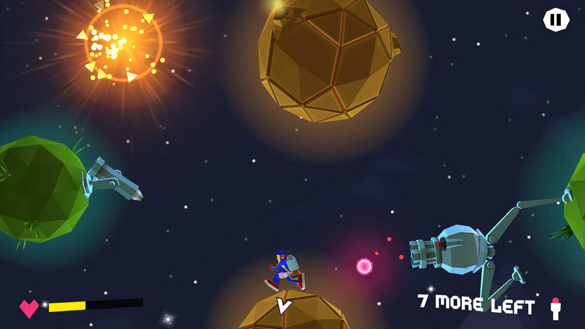
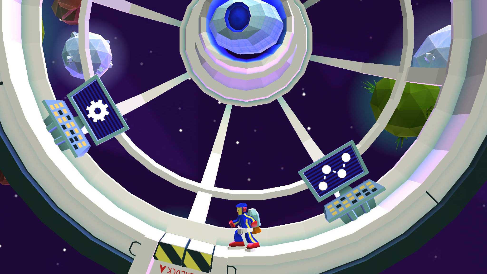
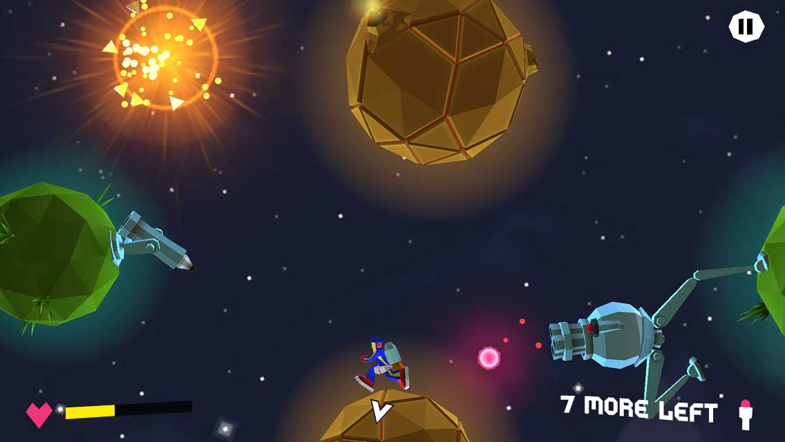
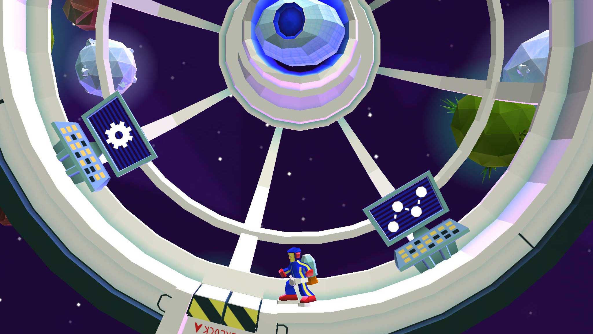

Games
Two mobile video games that I've worked on as passion projects. An Untitled personal project, and Zip, a
game in which I collaborated as part of a 3 person independent team.
These projects gave me the
inspiration to learn and the opportunity to work on a multitude of disciplines such as; visual design,
game design, animation, programming, and audio design.
The layerd settings navigation model interaction and animations working on target platform.
 


